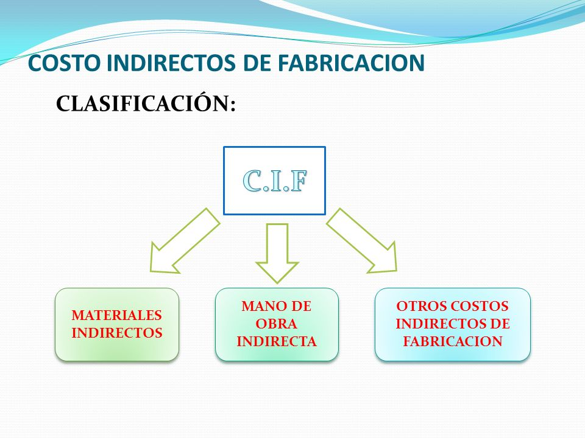

Indirect cost
An indirect cost is that cost that can not be easily identified, it is not feasible to quantify its value accurately, or it is simply complex, it demands time, effort and it may be expensive to try to measure the value involved in the production of the product. For example to make a closet, this requires glue, which is not used in its entirety but what is necessary, in this case it is complex to calculate, measure and quantify the value of the glue used to manufacture the cabinet. Another example is related to identifying the cost of the sugar used to make a dessert, it is just as complex to measure and quantify the value of what was used in this ingredient.
